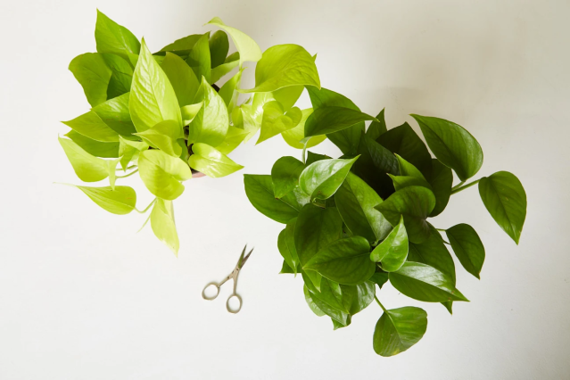
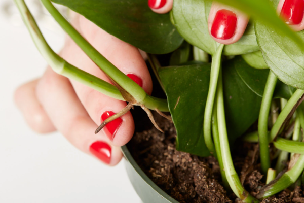
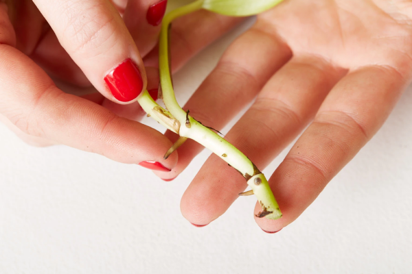
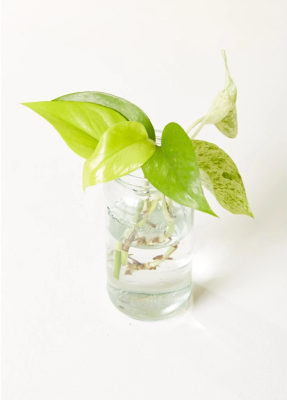
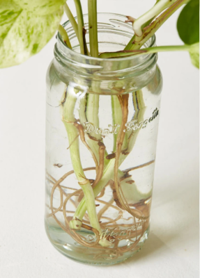

Propagating plants might sound like a drag, but depending on what type of plant you’re working with, it can be simple. Follow our steps below and you’ll be putting the ‘pro’ in propagation in no time.
Words by The Sill
Propagation is not always successful on the first few tries, but we encourage you start somewhere because it’s rewarding when it works! You. Got. This.
Propogation for many plants is best done in potting soil, but some plants can be propagated in water. This is because they have evolved in an environment that allows it. Most Aroid plants can be propagated in water, including pothos plants, philodendrons, monsteras, and ZZ plants. These plants originate from an ancestor that lived in swamps, so being able to adapt to flooding conditions and still being able to grow was key to survival. As a result, the descendants of that ancestor have the ability to grow in water, too. However, they are still land plants and will do best if planted in soil over the long term. Follow our easy steps below and you’ll be putting the ‘pro’ in propagation in no time.
On a mature vine, look right below the leaf or stem/vine juncture for a tiny brown root node. These tiny bumps are the key to propagating pothos. You’ll want to snip off a couple inches of healthy stem right before a node and include a node or two with the cutting, as this is where the new roots will come from.
Remove any leaves too close to the node, especially ones that might end up submerged under water when you put your cutting into your glass vessel.
Place your plant cutting(s) in your glass vessel and put it in a spot that receives bright to moderate indirect light. Do not place in strong, direct light or super-low light. (Learn more a plant's light needs here).
Arguably, the most difficult step: be patient! Check root growth from the node on a weekly basis. Add fresh, tepid water when needed. You can replace the water every few days, or simply top off the vessel with fresh water when it’s looking low—as long as there is no murkiness or fungi growing. If the water is murky, we recommend replacing it for the health of the growing root system.
If you’d like to transplant your plant cutting(s) from the glass vessel into a planter with potting mix, we recommend waiting until the root is at least 1 inch long or longer. This should take 4-6 weeks. Once the roots of the cutting are potted in fresh potting mix,) saturate that mix with room temperature water and place in bright indirect light. Let potting mix dry out between waterings. (Learn more about potting plants here).
If you want to keep your plant cutting(s) growing in water indefinitely, that is totally a viable option. A word of warning: the longer your plant cutting sits in water, the worse the plant could fare over time. Why? Water has no nutrients, and can increase the risk for potential fungal infections. You can help to combat this by changing out the water regularly and adding a tiny bit of fertilizer every month or so during the spring and summer growing season.
Source: https://www.thesill.com/blogs/diy/plant-propagation-for-beginners